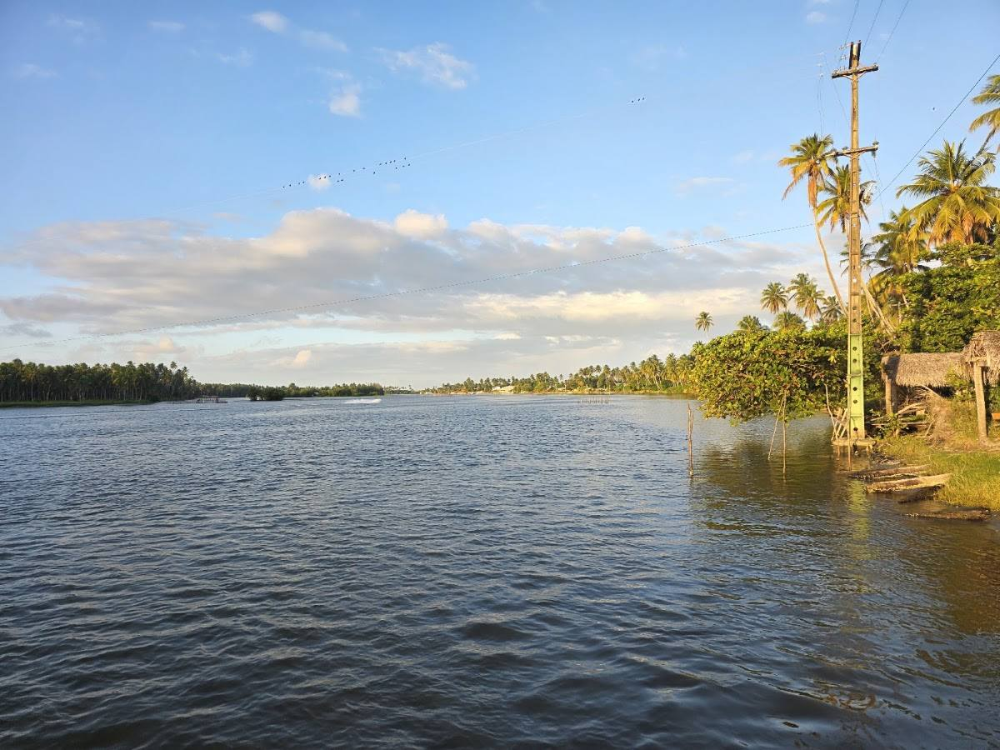
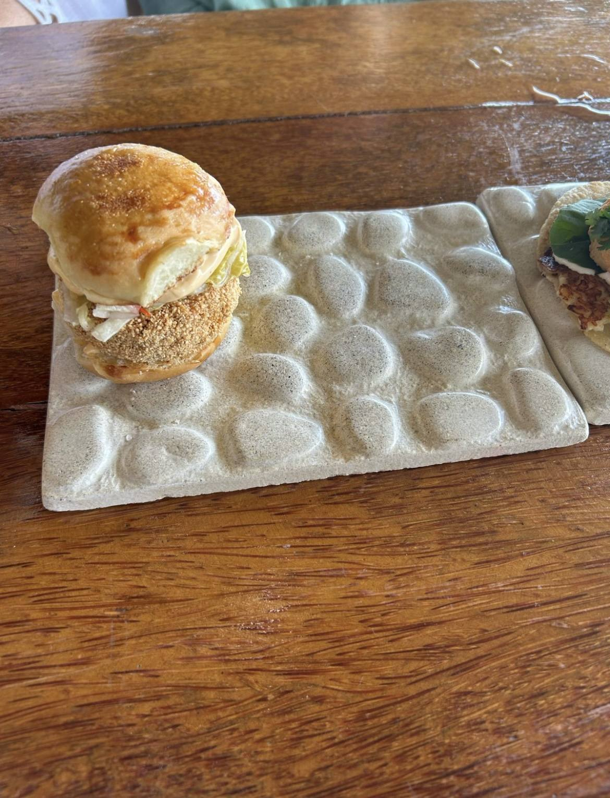
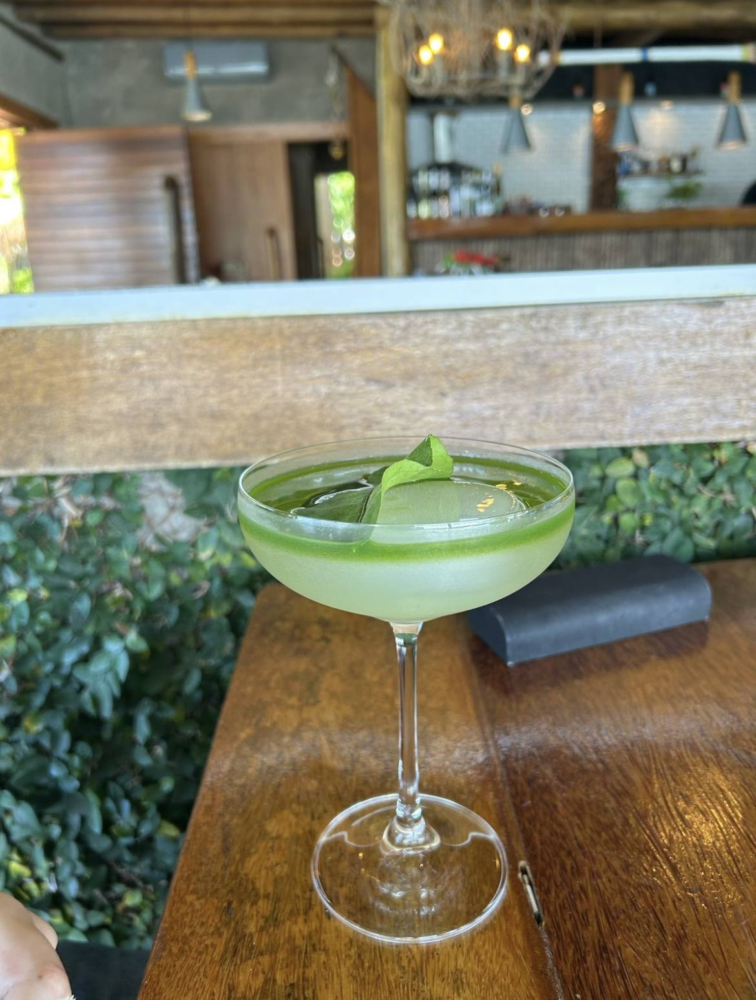
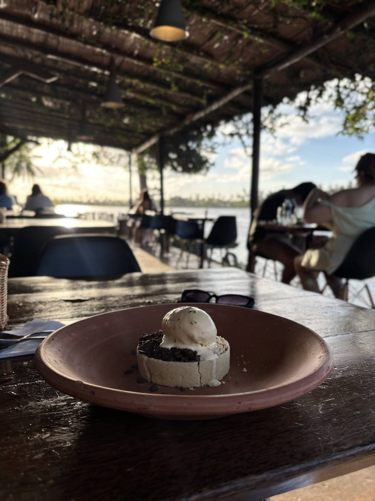
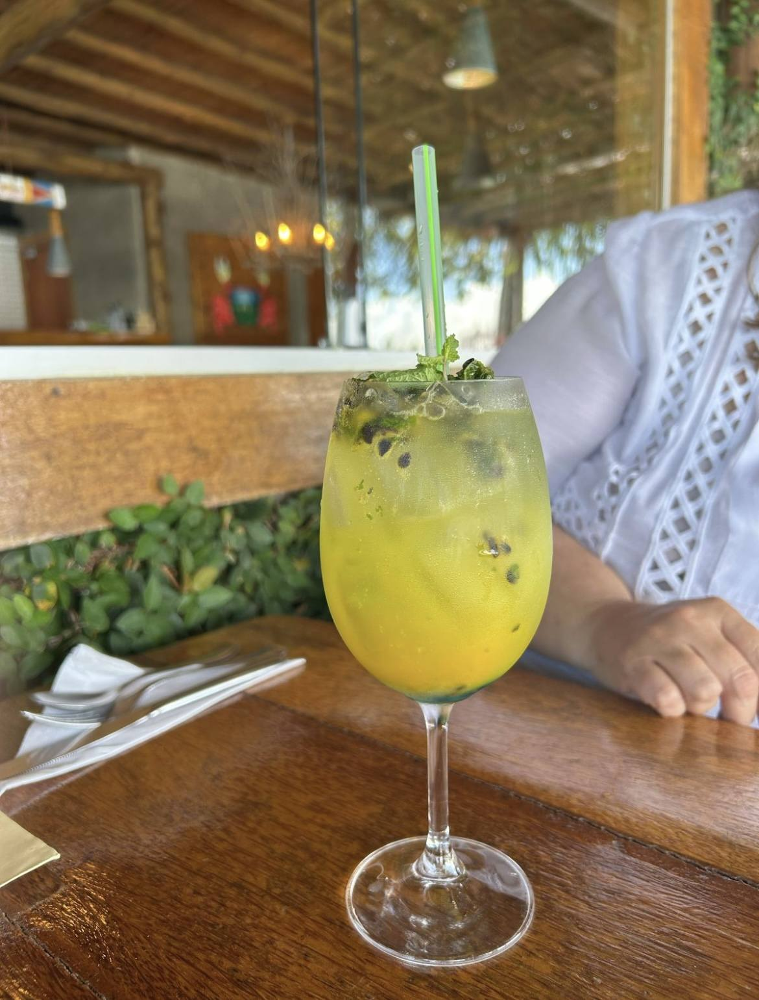
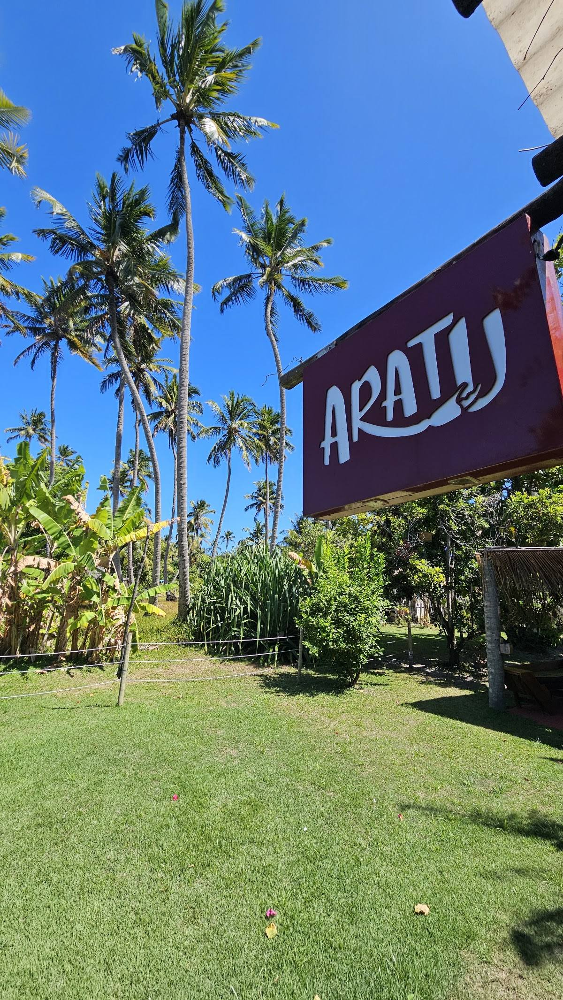
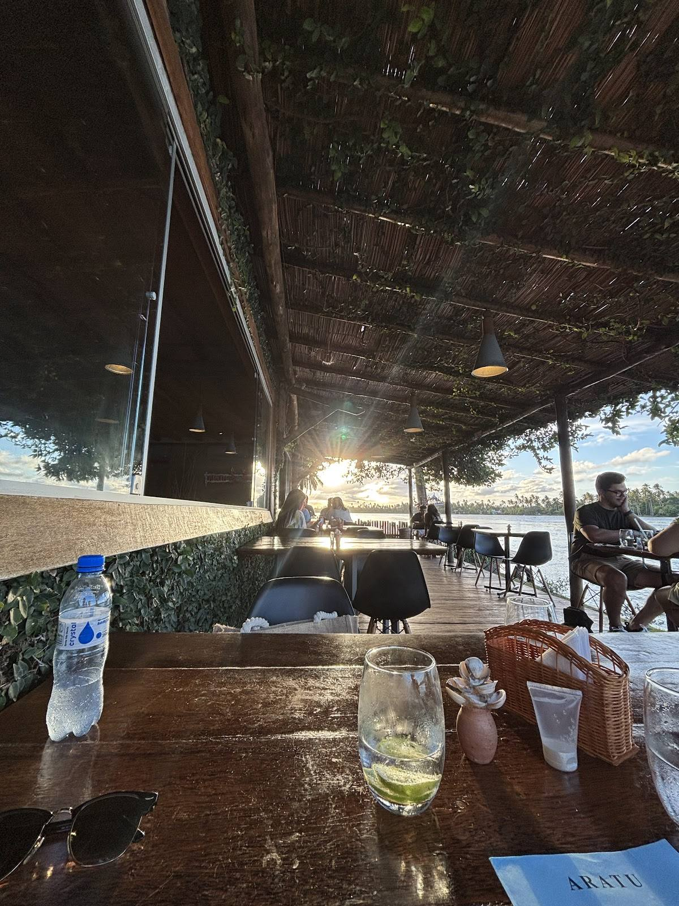
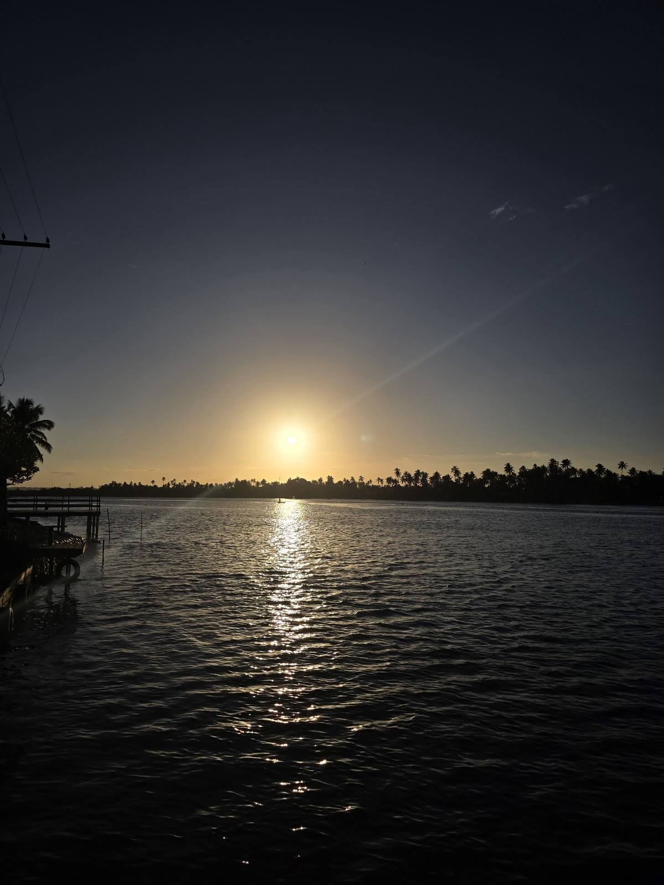
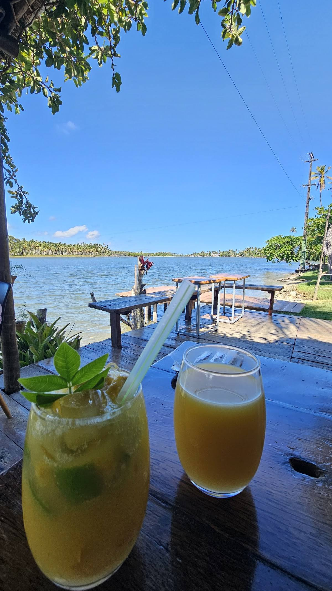
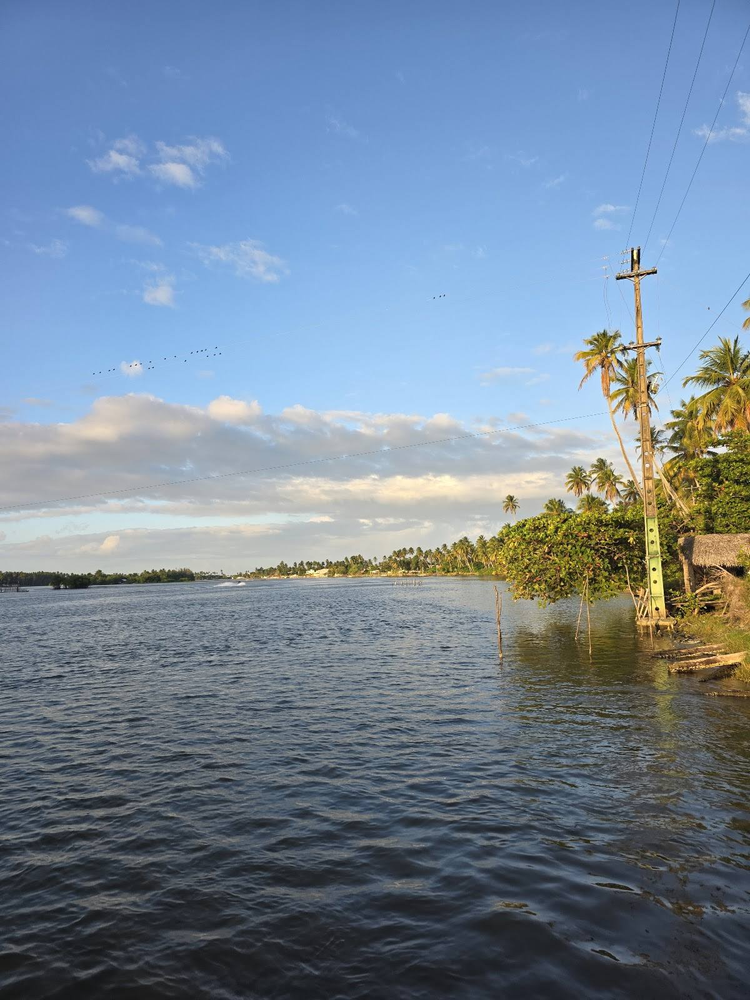

Restaurante e eventos · Marechal Deodoro, AL
Cozinha autoral à beira da Lagoa Manguaba
O restaurante do Chef Paulo Quintella fica no final da Massagueira, com mesas no deque, ingredientes da região e o pôr do sol sobre a lagoa.

- Abre
- Sexta a domingo
12h às 17h30 - Onde
- Av. Divina Pastora, s/n
Massagueira de Cima - Reservas
- (82) 99115-2257
pelo WhatsApp - 4,7 de 5
289 avaliações
A cozinha
Ingredientes da lagoa, receitas do chef
O cardápio usa produtos regionais e muda com a estação. Abaixo, pratos e drinks que os clientes citam nas avaliações do Google.
-

Burguer de Siri
Entrada com siri da região, em formato de mini hambúrguer.
-

Verde dos teus olhos
Drink da casa, recomendado por quem já foi.
-

Sobremesas
Como a cocada brûlée, citada pela imprensa local.
-

Drinks
Frutas frescas, servidos na beira da água.
Também citados: Taco da Lagoa e ceviche. Preços e pratos do dia estão no cardápio atual.
O lugar
Um almoço sem pressa, de frente para a água
Coqueiros no caminho, salão coberto de palha e um deque sobre a Lagoa Manguaba. A tarde termina com o sol se pondo atrás da margem.





Quem foi
4,7 no Google, com 289 avaliações
“Visitar o Aratu é uma experiência completa inigualável. Desde a natureza do caminho até o restaurante, até a vista do restaurante junto de um cardápio repleto de ingredientes regionais.”
“O ambiente é um sonho, parece que o tempo para e a pessoa consegue ter um respiro de paz lá. Vista deslumbrante e tranquila!”
“Estrutura muito boa, calma e elegante pra um almoço e fim de tarde de casal. Fui e já indiquei para mais pessoas.”
Eventos
Casamentos e eventos à beira da lagoa
O Aratu recebe casamentos e eventos e também aluga o espaço. Conte a data e o número de convidados para receber um orçamento.
Pedir orçamentoReserva
Garanta sua mesa
Preencha e a mensagem abre pronta no WhatsApp do restaurante. A equipe confirma a disponibilidade por lá.
Atendimento de sexta a domingo, das 12h às 17h30.
Como chegar
No final da Massagueira
Av. Divina Pastora, s/nMassagueira de Cima
Marechal Deodoro · AL · 57160-000 Abrir no Maps